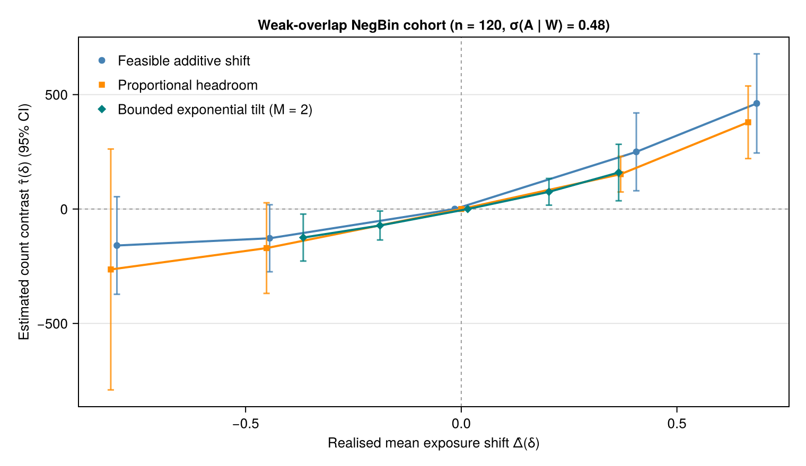

Continuous shift & tilting policies
Biological exposures are often continuous and physiologically constrained: immune pathway scores, parasite loads, hormone concentrations, or nutrient levels. Evaluating a static intervention such as "set every host's cytokine score to +2" routinely violates positivity because no individuals in certain ages, seasons, or infection states ever experience that value (Petersen et al., 2012). Modified treatment policies (MTPs) and stochastic exponential-tilting interventions solve this problem by nudging the observed exposure distribution rather than forcing every unit to a single value (Díaz & van der Laan, 2012; Díaz & Hejazi, 2020; Díaz et al., 2023; Schindl, Shen & Kennedy, 2024).
Choosing how to define that nudge matters critically for finite-sample inference. This guide contrasts marginal and conditional support, compares all five continuous-exposure policies implemented in CausalTargeted, explains the mathematics behind regular density ratios and bounded exponential tilting, and demonstrates how to compare policies on a shared biological scale.
Marginal versus conditional support, and why hard clamping breaks EIF inference
Two distinct notions of support govern continuous interventions:
- Marginal support is the overall range $[L, U]$ observed across the whole cohort (for example, the 1st to 99th percentiles of an immune pathway score).
- Conditional support $\operatorname{supp}(A \mid W)$ is the range of exposure values actually realised among individuals sharing covariates $W$ (for example, among unvaccinated juveniles with low prior parasite exposure).
A shift can sit comfortably inside the marginal range $[L, U]$ yet still fall far in the tail of the conditional distribution $g(a \mid W)$. When covariates strongly predict the exposure—leaving a small conditional standard deviation $\sigma(A \mid W)$—even a modest additive shift moves individuals into covariate-specific regions with very low observed density.
The simplest way to keep shifted exposures inside marginal bounds is hard clamping, $d_\delta(a) = \operatorname{clamp}(a + \delta s, L, U)$. Although convenient for point estimation, hard clamping maps an entire interval of exposures onto the single boundary value $L$ or $U$. Under a continuous treatment law, that collapse creates discrete point masses (atoms) at the boundaries where the map is not invertible and the shifted law is no longer absolutely continuous with respect to $g(a \mid W)$. Ordinary nonparametric efficient influence function (EIF) intervals therefore fail; run_lmtp_grid warns and reports inference_status = :unsupported_clamped_policy with NaN limits whenever a nonzero hard-clamped shift is requested.
CausalTargeted provides four regular continuous policies that avoid boundary point masses and support uncapped EIF inference: three deterministic maps on prespecified bounds (feasible_additive_shift_policy, smooth_bounded_logit_shift_policy, and proportional_headroom_policy) and one conditional-support-preserving stochastic intervention (exponential_tilt_policy).
Comparison of continuous policies
| Policy constructor | Map or intervened law | Prespecified bounds on $A$? | Density ratio vs density-free | Exact theoretical weight bounds | Weak-overlap, small-$n$ behaviour | When to use |
|---|---|---|---|---|---|---|
ShiftPolicy (additive_shift_policy, multiplicative_shift_policy, threshold_shift_policy) | $\operatorname{clamp}(a + \delta s, L, U)$ (or multiplicative / threshold) | Empirical quantiles $(q_L, q_U)$ by default | Density ratio (:gaussian, :classification, or :hybrid), truncated by default | Ad-hoc cap (trunc) only; EIF inference gated (:unsupported_clamped_policy) | Point estimates stabilised by truncation; ordinary EIF intervals unavailable | Exploratory point-estimate curves only, or legacy quantile-clamped comparisons |
FeasibleAdditiveShiftPolicy (feasible_additive_shift_policy(L, U; sd_scale)) | $a + s$ if $a, a + s \in [L, U]$, else $a$ ($s = \delta \cdot \mathrm{sd\_scale}$) | Yes: prespecified $[L, U]$ and sd_scale | Gaussian density ratio with overlapping-branch sum | Unbounded above; grows exponentially as `` | s | / \sigma(A \mid W)`` increases |
SmoothBoundedLogitShiftPolicy (smooth_bounded_logit_shift_policy(L, U)) | $L + (U - L)\,\operatorname{logistic}\!\big(\operatorname{logit}(\frac{a - L}{U - L}) + \delta\big)$ | Yes: prespecified $(L, U)$ with all $A_i \in (L, U)$ strictly | Gaussian density ratio in logit coordinates | Unbounded above in logit tails | Smooth and invertible inside $(L, U)$; sensitive to small conditional variance near boundaries | Naturally bounded proportions, scores, or titres strictly inside known physiological limits $(L, U)$ |
ProportionalHeadroomPolicy (proportional_headroom_policy(L, U)) | $a + \delta(U - a)$ for $\delta \ge 0$; ``a + | \delta | (L - a)$for$\delta < 0$on$[L, U]`` | Yes: prespecified $[L, U]$; $\delta \in (-1, 1)$ | Single-branch Gaussian density ratio with Jacobian ``1 / (1 - | \delta |
ExponentialTiltPolicy linear (exponential_tilt_policy(; bound = nothing, center = c)) | $g_\delta(a \mid W) \propto \exp(\delta(a - c))\,g(a \mid W)$ | No (respects exact $\operatorname{supp}(A \mid W)$) | Density-free: convex calibration balancing for $\log m_0(W)$ | Unbounded above in exposure tails | Adapts shift to $\sigma^2(W)$, but tail outliers inflate weights and reduce ESS at large `` | \delta |
ExponentialTiltPolicy bounded (exponential_tilt_policy(; bound = M, center = c)) | $g_\delta(a \mid W) \propto \exp\!\big(\delta M \tanh(\frac{a - c}{M})\big)\,g(a \mid W)$ | No bounds on $A$; optional score scale $M > 0$ (e.g. bound = 2.0) | Density-free: convex calibration balancing for $\log m_0(W)$ | Exact: ``e^{-2 | \delta | M} \le H_i \le e^{2 |
How the regular deterministic shifts work
All three regular deterministic policies avoid boundary point masses so that the intervened exposure law remains absolutely continuous with respect to $g(a \mid W)$ (Díaz et al., 2023). Each uses uncapped Gaussian density ratios (weight_truncation = false, density_ratio = :gaussian) in run_lmtp_grid.
Feasible additive shift: overlapping-branch density ratio
Under feasible_additive_shift_policy(L, U; sd_scale), an individual with exposure $a$ is shifted by $s = \delta \cdot \mathrm{sd\_scale}$ only when both $a$ and $a + s$ lie inside the prespecified eligibility interval $[L, U]$; otherwise $a$ is retained unchanged:
\[d_\delta(a) = \begin{cases} a + s & \text{if } a \in [L, U] \text{ and } a + s \in [L, U], \\ a & \text{otherwise.} \end{cases}\]
Because no observations pile up on the boundary, the map has no point masses. However, an observed value $a \in [L, U]$ can be reached in up to two ways: from itself on the retained branch (if $a + s \notin [L, U]$) and from the preimage $a - s$ on the shifted branch (if $a - s \in [L, U]$). By the change-of-variables formula for piecewise-injective maps (Díaz et al., 2023), the exact density ratio sums both preimages:
\[H_\delta(a, W) = \mathbf{1}\{a + s \notin [L, U]\} + \mathbf{1}\{a - s \in [L, U]\}\,\frac{g(a - s \mid W)}{g(a \mid W)} \qquad (a \in [L, U]),\]
with $H_\delta(a, W) = 1$ for $a \notin [L, U]$. Under a conditional Gaussian model $A \mid W \sim \mathcal{N}(\mu(W), \sigma^2)$, the incoming term $g(a - s \mid W) / g(a \mid W)$ equals $\exp\!\big(s(a - \mu(W) - s/2)/\sigma^2\big)$. When $\sigma$ is small relative to $|s|$ (weak conditional overlap), this ratio still grows rapidly in the conditional tails even though $[L, U]$ is respected marginally.
Smooth bounded logit shift
smooth_bounded_logit_shift_policy(L, U) transforms exposures strictly inside $(L, U)$ to unconstrained logit coordinates $Z = \operatorname{logit}((A - L)/(U - L))$, applies a constant additive shift $Z \mapsto Z + \delta$, and maps back smoothly to $(L, U)$. Because the map is a global diffeomorphism on $(L, U)$, every shifted exposure remains strictly interior and the Gaussian density ratio in $Z$-coordinates takes the simple single-branch translation form $g_Z(z - \delta \mid W) / g_Z(z \mid W)$. Note that $\delta$ is parameterised on the log-odds scale rather than the raw exposure scale.
Proportional headroom: single-branch contraction with constant Jacobian
proportional_headroom_policy(L, U) keeps the raw exposure scale while moving each eligible individual a prespecified proportion $\delta \in (-1, 1)$ of their remaining distance ("headroom") towards $U$ (for $\delta \ge 0$) or $L$ (for $\delta < 0$):
\[d_\delta(a) = \begin{cases} a + \delta(U - a) = (1 - \delta)a + \delta U & \text{if } a \in [L, U],\;\delta \ge 0, \\ a + |\delta|(L - a) = (1 - |\delta|)a + |\delta| L & \text{if } a \in [L, U],\;\delta < 0, \\ a & \text{if } a \notin [L, U]. \end{cases}\]
On $[L, U]$, $d_\delta$ is a strictly monotone affine contraction with no overlapping branches. For $\delta > 0$, the image of $[L, U]$ is the sub-interval $[L + \delta(U - L), U]$; each $a$ in that image has a unique preimage $u(a) = (a - \delta U) / (1 - \delta)$ with constant Jacobian $|\mathrm{d}u/\mathrm{d}a| = 1 / (1 - |\delta|)$ (and analogously $u(a) = (a - |\delta| L) / (1 - |\delta|)$ on $[L, U - |\delta|(U - L)]$ for $\delta < 0$). The exact single-branch density ratio on $[L, U]$ is
\[H_\delta(a, W) = \begin{cases} \dfrac{1}{1 - |\delta|}\,\dfrac{g(u(a) \mid W)}{g(a \mid W)} & \text{if } a \in d_\delta([L, U]), \\ 0 & \text{if } a \in [L, U] \setminus d_\delta([L, U]), \end{cases}\]
and $1$ outside $[L, U]$. Because individuals already near $U$ move less than individuals near $L$, the headroom map naturally avoids boundary piling, but the Gaussian ratio $g(u(a) \mid W) / g(a \mid W)$ can still become heavy-tailed when conditional overlap is tight.
Bounded exponential-tilting stochastic interventions
Rather than shifting each observed exposure deterministically, an exponential-tilting intervention (Díaz & Hejazi, 2020; Schindl, Shen & Kennedy, 2024) reweights the conditional exposure law directly within its exact conditional support:
\[g_\delta(a \mid W) = \frac{w_\delta(a)\,g(a \mid W)}{m_0(W)}, \qquad w_\delta(a) = \exp\!\big(\delta\,\phi(a)\big), \qquad m_0(W) = \mathbb{E}\!\left[w_\delta(A) \mid W\right].\]
Two properties make this construction uniquely well suited to biological cohorts with strong confounding and modest $n$:
- Automatic conditional-support preservation and density-free weights. Wherever $g(a \mid W) = 0$, the tilted law $g_\delta(a \mid W) = 0$ as well: no prespecified marginal bounds $[L, U]$ are required, and the intervened law never extrapolates outside $\operatorname{supp}(A \mid W)$. Under conditional Gaussianity $A \mid W \sim \mathcal{N}(\mu(W), \sigma^2(W))$ with linear score $\phi(a) = a - c$, tilting shifts the conditional mean by $\delta\,\sigma^2(W)$—automatically shifting strata with wide natural variation more than tightly constrained strata. Moreover, the true density ratio $H_\delta(A, W) = g_\delta(A \mid W) / g(A \mid W) = w_\delta(A) / m_0(W)$ depends only on the scalar conditional expectation $m_0(W)$, so no conditional density estimation is needed.
- Exact weight bounds without ad-hoc truncation. With the linear score $\phi(a) = a - c$, rare exposure outliers can still produce large $w_\delta(A)$. Setting
bound = M > 0replaces $\phi$ with the smooth, strictly increasing bounded score (Schindl, Shen & Kennedy, 2024)\[\phi(a) = M \tanh\!\left(\frac{a - c}{M}\right),\]
which behaves like $a - c$ near the centre $c$ while saturating smoothly at $\pm M$. Because $|\phi(a)| \le M$ for every real $a$, both the numerator $w_\delta(A)$ and its conditional mean $m_0(W)$ lie strictly inside $[e^{-|\delta|M}, e^{|\delta|M}]$. The true density ratio therefore satisfies\[e^{-2|\delta|M} \le H_\delta(A, W) = \frac{w_\delta(A)}{m_0(W)} \le e^{2|\delta|M}\]
almost surely. Out-of-fold estimates $\log \hat{m}_0(W)$ are projected onto the exact theoretical range $[-|\delta|M, |\delta|M]$, so estimated weights obey the same exact bounds with zero ad-hoc truncation (tilt_weight_bounds).
Convex calibration balancing for $m_0(W)$
In CausalTargeted, $\log m_0(W) = \beta^\top \psi(W)$ is fitted on a fold-standardised active covariate basis $\psi(W) = [1, \tilde{W}]$ by minimising the strictly convex calibration-balancing objective:
\[L(\beta) = \frac{1}{n}\sum_{i=1}^n \Big(w_\delta(A_i)\exp(-\beta^\top\psi(W_i)) + \beta^\top\psi(W_i)\Big) + \frac{\lambda}{2}\|\beta_{-1}\|_2^2.\]
Solved by damped Newton–Raphson with Armijo backtracking, the first-order optimality condition at $\lambda = 0$ enforces exact finite-sample covariate balance:
\[\frac{1}{n}\sum_{i=1}^n \hat{H}_i\,\psi(W_i) = \frac{1}{n}\sum_{i=1}^n \psi(W_i),\]
including $\bar{H} = 1$. An optional ridge penalty $\lambda > 0$ regularises non-intercept coefficients when $p$ is large relative to $n$.
Rao-Blackwellised :plugin versus :direct outcome nuisances
The efficient influence function for the tilted outcome contrast $\tau(\delta) = \mathbb{E}_{g_\delta}[Y] - \mathbb{E}[Y]$ requires the tilted conditional mean $\theta_\delta(W) = \mathbb{E}[w_\delta(A)\,Y \mid W] / m_0(W)$:
\[\varphi_\delta(O) = H_\delta(A, W)\big(Y - \theta^*_\delta(W)\big) + \theta^*_\delta(W) - Y - \tau(\delta).\]
estimate_exponential_tilt fits $\hat{\theta}_\delta(W)$ cross-fitted on an independent fold partition (independent_folds = true by default) and targets it via one-step canonical-link TMLE so that $\frac{1}{n}\sum_i \hat{H}_i(Y_i - \theta^*_\delta(W_i)) \approx 0$. Two strategies are available for fitting $\hat{\theta}_\delta(W)$:
outcome_method = :directfits a $w_\delta(A)$-weighted canonical GLM of $Y$ directly on $W$. For heavily overdispersed biological counts (such as Negative Binomial parasite egg counts), raw observation-level variance $\operatorname{Var}(Y \mid A, W)$ is amplified by tilt weights.outcome_method = :plugin(default) uses two-stage Rao-Blackwellisation: Stage 1 fits an unweighted outcome GLM $\hat{\mu}(A, W)$ on $(A, W)$ to average out $\operatorname{Var}(Y \mid A, W)$ before weighting, and Stage 2 projects the smooth predictions $\hat{\mu}(A_i, W_i)$ onto $W$ with tilt weights $w_\delta(A_i)$ (using a Gamma log-link GLM for:negbinto match constant coefficient of variation, and canonical links for:gaussian,:binomial, and:poisson). In Monte Carlo benchmarks on overdispersed count outcomes,:pluginachieves lower RMSE than:directacross nearly all overlap and sample-size regimes (see Stress validation).
Interpreting dual-axis $(\hat{\Delta}(\delta), \hat{\tau}(\delta))$ curves
Deterministic shifts, headroom contractions, logit shifts, and exponential tilts all use different parameterisations of $\delta$. Comparing policies directly against $\delta$ is therefore misleading: $\delta = 1$ means one standard deviation for feasible_additive_shift_policy, is out of domain for proportional_headroom_policy, and corresponds to a conditional-variance-scaled tilted shift for exponential_tilt_policy.
The scientifically comparable quantity across every policy is the realised mean exposure shift:
\[\Delta(\delta) = \mathbb{E}_{g_\delta}[A] - \mathbb{E}[A].\]
estimate_exponential_tilt estimates both $\hat{\tau}(\delta)$ and $\hat{\Delta}(\delta)$ with targeted canonical-link EIFs, returning both Wald confidence intervals and studentised multiplier bootstrap intervals (studentised_multiplier_ci, Rademacher weights by default). In run_lmtp_grid, the realised mean shift is stored in the effective_shift column for every policy, allowing direct visual comparison of $(\hat{\Delta}(\delta), \hat{\tau}(\delta))$ curves on the same exposure axis.
Worked example: comparing regular policies under weak overlap
Below we simulate a single weak-overlap biological cohort (n = 120) with an overdispersed Negative Binomial parasite burden Y, a continuous immune pathway score A strongly confounded by baseline history (conditional SD $\sigma = 0.48$), plus binary age and vaccination covariates. We compare feasible_additive_shift_policy, proportional_headroom_policy, and bounded exponential_tilt_policy(; bound = 2.0) through run_lmtp_grid, then inspect the full dual-axis diagnostics from estimate_exponential_tilt.
using CausalTargeted, DataFrames, Distributions, StableRNGs, Statistics, CairoMakie
function simulate_weak_overlap_cohort(n; rng = StableRNG(2026))
age = Float64.(rand(rng, Bool, n))
vaccination = Float64.(rand(rng, Bool, n))
history = randn(rng, n)
# Strong confounding (slope = 0.85) with tight conditional spread (σ = 0.48)
a = 0.35 .* age .- 0.30 .* vaccination .+ 0.85 .* history .+ 0.48 .* randn(rng, n)
mean_y = 800.0 .* exp.(0.25 .* a .+ 0.35 .* history .+ 0.20 .* age .- 0.30 .* vaccination)
y = [rand(rng, NegativeBinomial(2.0, 2.0 / (2.0 + m))) for m in mean_y]
return DataFrame(A = a, Y = y, age = age, vaccination = vaccination, history = history)
end
df = simulate_weak_overlap_cohort(120; rng = StableRNG(2026))
covs = [:age, :vaccination, :history]
# 1. Feasible additive shift on prespecified bounds [-1.85, 1.70]
pol_feas = feasible_additive_shift_policy(-1.85, 1.70; sd_scale = 1.0)
grid_feas = run_lmtp_grid(
df, :A, :Y;
baseline = covs,
deltas = [-1.0, -0.5, 0.0, 0.5, 1.0],
policy = pol_feas,
family_outcome = :negbin,
learners_outcome = (:glm, :mean),
learners_trt = (:glm,),
density_ratio = :gaussian,
weight_truncation = false,
folds = 3,
simultaneous = false,
parallel = false,
rng = StableRNG(101),
)
# 2. Proportional headroom contraction on the same bounds [-1.85, 1.70]
pol_head = proportional_headroom_policy(-1.85, 1.70)
grid_head = run_lmtp_grid(
df, :A, :Y;
baseline = covs,
deltas = [-0.45, -0.25, 0.0, 0.25, 0.45],
policy = pol_head,
family_outcome = :negbin,
learners_outcome = (:glm, :mean),
learners_trt = (:glm,),
density_ratio = :gaussian,
weight_truncation = false,
folds = 3,
simultaneous = false,
parallel = false,
rng = StableRNG(102),
)
# 3. Bounded exponential tilting (no prespecified bounds on A required)
pol_tilt = exponential_tilt_policy(; bound = 2.0, center = 0.0)
grid_tilt = run_lmtp_grid(
df, :A, :Y;
baseline = covs,
deltas = [-2.0, -1.0, 0.0, 1.0, 2.0],
policy = pol_tilt,
family_outcome = :negbin,
folds = 3,
simultaneous = false,
parallel = false,
rng = StableRNG(103),
)
# Inspect dual-axis diagnostics and exact weight bounds for δ = 2.0
res_tilt = estimate_exponential_tilt(
df, :A, :Y, covs, 2.0, pol_tilt;
family_outcome = :negbin,
folds = 3,
bootstrap_B = 499,
rng = StableRNG(104),
)
(
realised_shift = round(res_tilt.shift_estimate; digits = 3),
tau_est = round(res_tilt.estimate; digits = 1),
wald_ci = (round(res_tilt.lower; digits = 1), round(res_tilt.upper; digits = 1)),
boot_ci = (round(res_tilt.boot_lower; digits = 1), round(res_tilt.boot_upper; digits = 1)),
ess_ratio = round(res_tilt.ess_ratio; digits = 3),
observed_H_range = (round(res_tilt.min_H; digits = 3), round(res_tilt.max_H; digits = 3)),
exact_H_bounds = (round(res_tilt.weight_bounds[1]; digits = 4), round(res_tilt.weight_bounds[2]; digits = 1)),
)(realised_shift = 0.365, tau_est = 160.4, wald_ci = (28.4, 292.4), boot_ci = (23.8, 298.2), ess_ratio = 0.523, observed_H_range = (0.092, 5.913), exact_H_bounds = (0.0003, 2981.0))Plotting every curve against its realised mean exposure shift $\hat{\Delta}(\delta)$ (effective_shift) reveals the bias–variance trade-off directly: under tight conditional overlap, bounded exponential tilting stays within the covariate-conditional support of the cohort and yields dramatically tighter 95% confidence intervals than deterministic density-ratio shifts.
fig = Figure(size = (760, 440), fontsize = 13)
ax = Axis(
fig[1, 1];
xlabel = "Realised mean exposure shift Δ̂(δ)",
ylabel = "Estimated count contrast τ̂(δ) (95% CI)",
title = "Weak-overlap NegBin cohort (n = 120, σ(A | W) = 0.48)",
xgridvisible = false,
ygridcolor = (:grey85, 0.7),
)
hlines!(ax, [0.0]; color = :grey60, linestyle = :dash, linewidth = 1)
vlines!(ax, [0.0]; color = :grey60, linestyle = :dash, linewidth = 1)
specs = [
("Feasible additive shift", grid_feas, :steelblue, :circle, -0.015),
("Proportional headroom", grid_head, :darkorange, :rect, 0.0),
("Bounded exponential tilt (M = 2)", grid_tilt, :teal, :diamond, 0.015),
]
for (label, g, col, mk, dx) in specs
ok = isfinite.(g.est) .& isfinite.(g.effective_shift)
x = g.effective_shift[ok] .+ dx
y = g.est[ok]
lwr = g.lwr[ok]
upr = g.upr[ok]
ord = sortperm(x)
lines!(ax, x[ord], y[ord]; color = col, linewidth = 2)
rangebars!(ax, x[ord], lwr[ord], upr[ord]; color = (col, 0.8), whiskerwidth = 6)
scatter!(ax, x[ord], y[ord]; color = col, marker = mk, markersize = 9, label = label)
end
axislegend(ax; position = :lt, framevisible = false)
fig
Practical guidance
- Check conditional overlap, not only marginal bounds. Even when shifted exposures fall inside marginal quantiles $[L, U]$, tight conditional spread $\sigma(A \mid W)$ inflates deterministic density-ratio weights and degrades small-$n$ EIF coverage.
- Default to
exponential_tilt_policy(; bound = 2.0)when overlap is weak or $n$ is small. Settingbound = 2.0(on a standardised or unit-scale exposure) guarantees finite weights without ad-hoc truncation while preserving near-nominal 95% coverage and high effective sample size (see the 400-replicate Monte Carlo comparison in Stress validation). - Use deterministic policies when a raw-scale shift rule is scientifically prescribed and conditional overlap is good. Choose
feasible_additive_shift_policyfor prespecified-unit shifts inside $[L, U]$,proportional_headroom_policyfor fraction-of-headroom contractions on $[L, U]$, orsmooth_bounded_logit_shift_policyfor strictly interior bounded scores. Always passweight_truncation = falseanddensity_ratio = :gaussianto obtain uncapped EIF intervals. - Report both axes. Present $\hat{\Delta}(\delta)$ alongside $\hat{\tau}(\delta)$ so readers can immediately see how much the exposure distribution actually moved under the intervention.
References
- Díaz Muñoz, I., & van der Laan, M. J. (2012). Population intervention causal effects based on stochastic interventions. Biometrics, 68(2), 541–549. doi:10.1111/j.1541-0420.2011.01685.x
- Díaz, I., & Hejazi, N. S. (2020). Causal mediation analysis for stochastic interventions. Journal of the Royal Statistical Society: Series B, 82(3), 661–683. doi:10.1111/rssb.12362
- Díaz, I., Williams, N., Hoffman, K. L., & Schenck, E. J. (2023). Nonparametric causal effects based on longitudinal modified treatment policies. Journal of the American Statistical Association, 118(542), 846–857. doi:10.1080/01621459.2021.1955691
- Petersen, M. L., Porter, K. E., Gruber, S., Wang, Y., & van der Laan, M. J. (2012). Diagnosing and responding to violations in the positivity assumption. Statistical Methods in Medical Research, 21(1), 31–54. doi:10.1177/0962280210386207
- Schindl, K., Shen, S., & Kennedy, E. H. (2024). Incremental effects for continuous exposures (bounded exponential-tilting stochastic interventions).